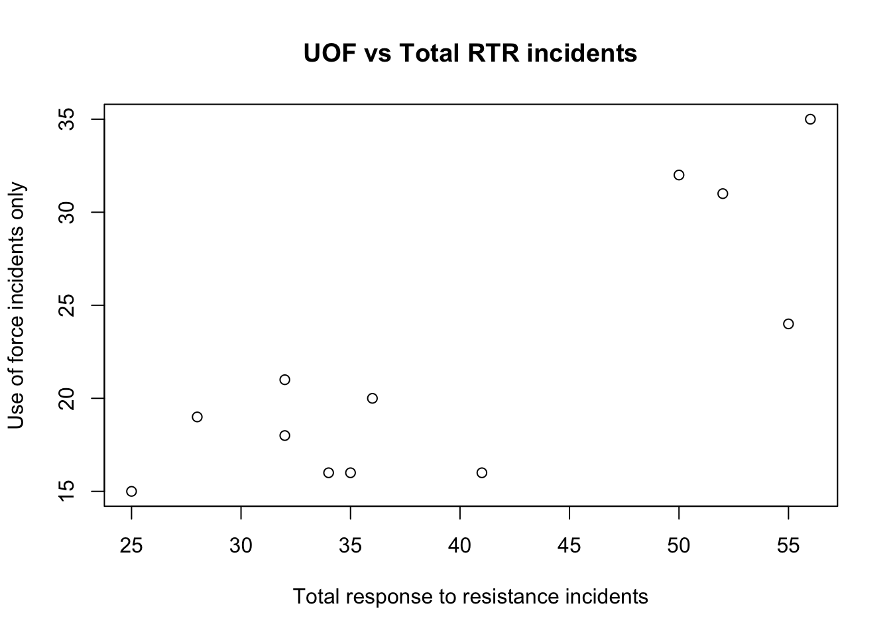
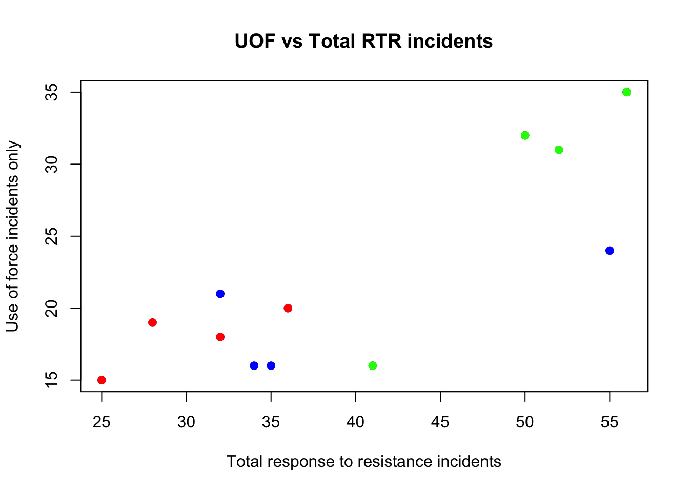
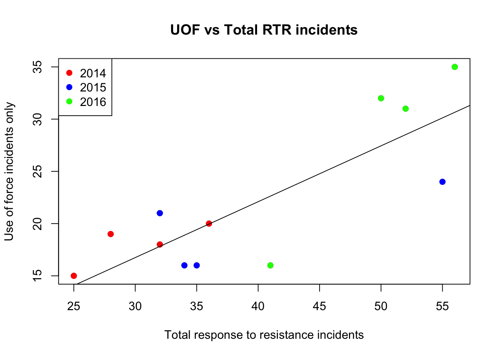
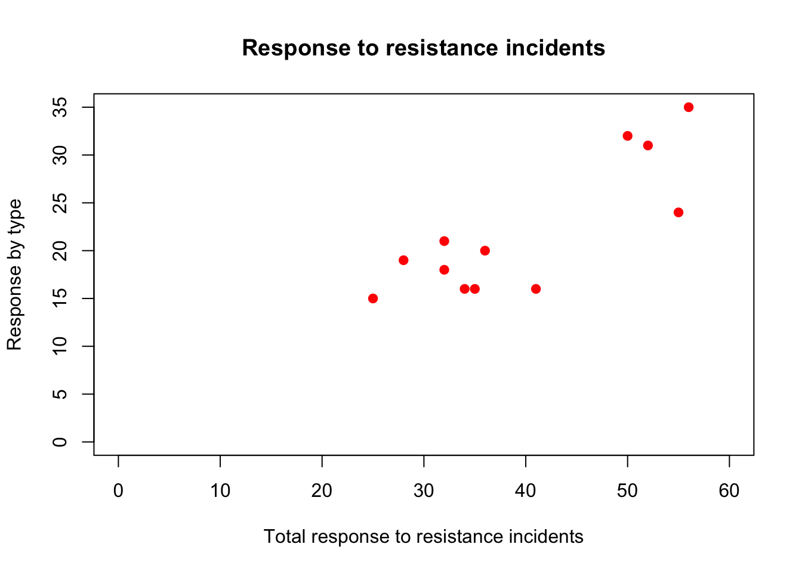
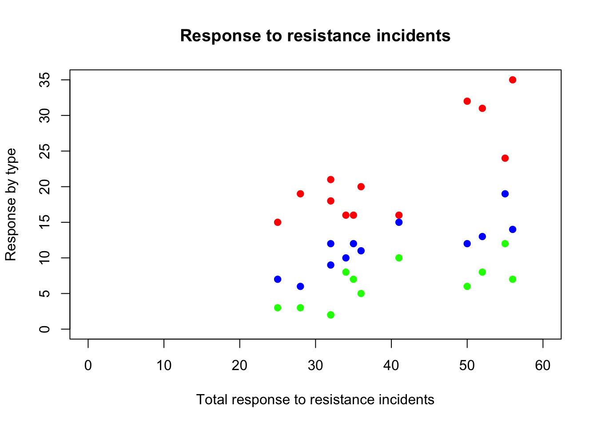
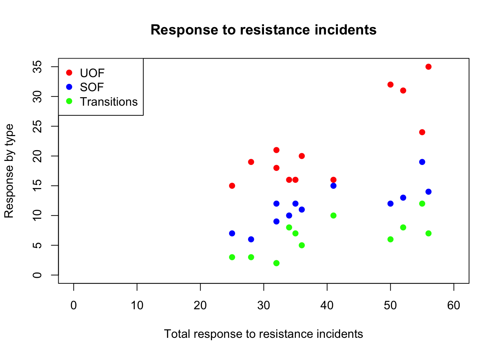
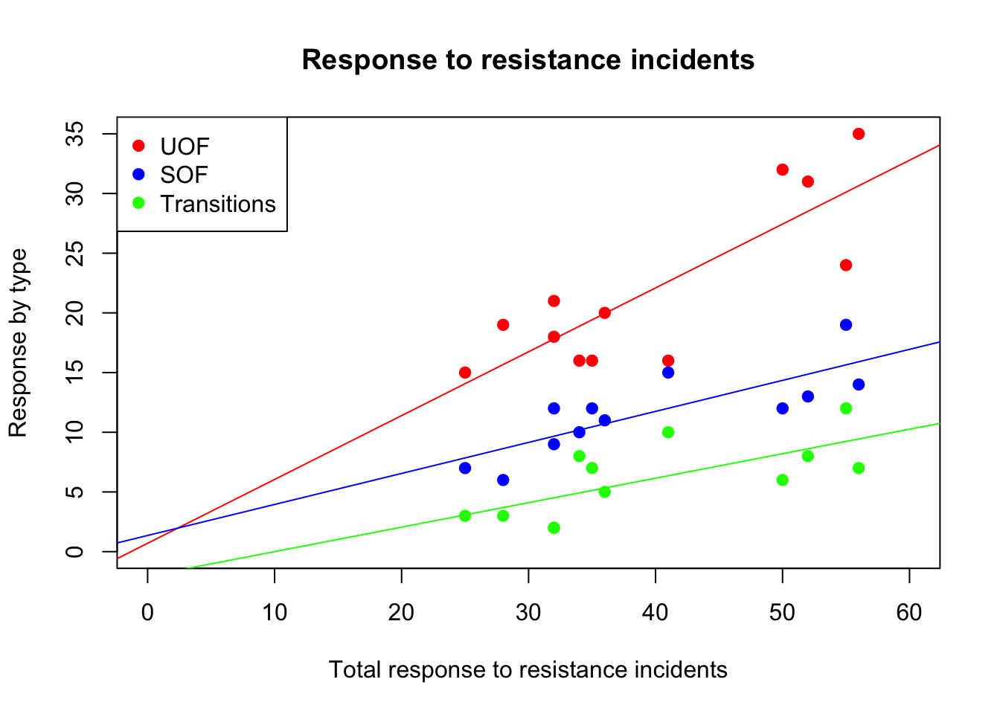
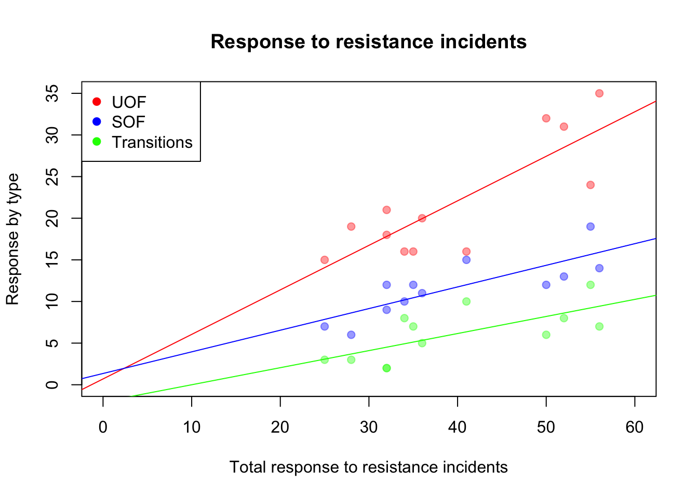

In the previous tutorial, we used the par command to create space for three seperate plots, which allowed us to compare the three categories of Response to Response to resistance to total RTR.
In this tutorial, we’ll use color to explore the data.
Load the readr library and then the dataset.
library(readr)
df <- read_csv("dfCrime.csv")## Parsed with column specification:
## cols(
## Year_Quarter = col_character(),
## year = col_integer(),
## quarter = col_character(),
## Total_CFS = col_integer(),
## Total_arrests = col_integer(),
## Total_RTR = col_integer(),
## SOF_only = col_integer(),
## UOF_only = col_integer(),
## Transitions = col_integer()
## )Now let’s use summary() to remind us of what the data is
summary(df)## Year_Quarter year quarter Total_CFS
## Length:12 Min. :2014 Length:12 Min. :18178
## Class :character 1st Qu.:2014 Class :character 1st Qu.:19663
## Mode :character Median :2015 Mode :character Median :21544
## Mean :2015 Mean :21341
## 3rd Qu.:2016 3rd Qu.:22753
## Max. :2016 Max. :24715
## Total_arrests Total_RTR SOF_only UOF_only
## Min. : 889.0 Min. :25.00 Min. : 6.00 Min. :15.00
## 1st Qu.: 947.8 1st Qu.:32.00 1st Qu.: 9.75 1st Qu.:16.00
## Median : 994.5 Median :35.50 Median :12.00 Median :19.50
## Mean :1013.2 Mean :39.67 Mean :11.67 Mean :21.92
## 3rd Qu.:1046.2 3rd Qu.:50.50 3rd Qu.:13.25 3rd Qu.:25.75
## Max. :1246.0 Max. :56.00 Max. :19.00 Max. :35.00
## Transitions
## Min. : 2.000
## 1st Qu.: 3.000
## Median : 6.500
## Mean : 6.083
## 3rd Qu.: 8.000
## Max. :12.000Three years with four quarters each of response-to-resistance (RTR) incidents from the Elgin police department. That’s broken down by the type of response - show of force only, use of force only and transition - show to use of force.
Generate the basic scatter plot, with custom labels
plot(df$Total_RTR, df$UOF_only,
main = "UOF vs Total RTR incidents",
xlab="Total response to resistance incidents",
ylab="Use of force incidents only")
One of the factors this data has is the year it occured. We can use color to see it. First, we need to select the data that’s associated with each year and add them to the plot.
plot(df$Total_RTR, df$UOF_only,
main = "UOF vs Total RTR incidents",
xlab="Total response to resistance incidents",
ylab="Use of force incidents only")
y2014 <- subset(df, year==2014)
y2015 <- subset(df, year==2015)
y2016 <- subset(df, year==2016)
points(y2014$Total_RTR,y2014$UOF_only,col="red",pch=19)
points(y2015$Total_RTR,y2015$UOF_only,col="blue",pch=19)
points(y2016$Total_RTR,y2016$UOF_only,col="green",pch=19)
Using subset, we select everything in the dataframe where the column year equals the date and stores it in the a new dataframe. So, y2014 contains everything were the year = 2014.
Then, points places those points onto the plot. col assigns a color, pch=19 makes the point a filled circle.
Now add the legend and regression line
plot(df$Total_RTR, df$UOF_only,
main = "UOF vs Total RTR incidents",
xlab="Total response to resistance incidents",
ylab="Use of force incidents only")
y2014 <- subset(df, year==2014)
y2015 <- subset(df, year==2015)
y2016 <- subset(df, year==2016)
points(y2014$Total_RTR,y2014$UOF_only,col="red",pch=19)
points(y2015$Total_RTR,y2015$UOF_only,col="blue",pch=19)
points(y2016$Total_RTR,y2016$UOF_only,col="green",pch=19)
legend("topleft",
pch = c(19,19,19),
col = c("red","blue","green"),
legend = c("2014", "2015", "2016"))
abline(lm(df$UOF_only~df$Total_RTR))
Using color adds another dimension to the chart.
We can use color to plot all three of the Response to Resistance categories in a single plot.
First let’s clear the plot window with the dev.off() command.
dev.off()## null device
## 1Then, set up the entire graphic by plotting the first category, Use of Force
plot(df$Total_RTR, df$UOF_only,
main = "Response to resistance incidents",
xlab="Total response to resistance incidents",
ylab="Response by type",
xlim=c(0,60), ylim=c(0,35),col="red",pch=19)
We set all the titles and labels, the extents of the axes and make the UOF points a filled red circle.
Then add the other two categories to the existing plot.
plot(df$Total_RTR, df$UOF_only,
main = "Response to resistance incidents",
xlab="Total response to resistance incidents",
ylab="Response by type",
xlim=c(0,60), ylim=c(0,35),col="red",pch=19)
points(df$Total_RTR,df$SOF_only,col="blue",pch=19)
points(df$Total_RTR,df$Transitions,col="green",pch=19)
To understand what we’re seeing we need a legend.
plot(df$Total_RTR, df$UOF_only,
main = "Response to resistance incidents",
xlab="Total response to resistance incidents",
ylab="Response by type",
xlim=c(0,60), ylim=c(0,35),col="red",pch=19)
points(df$Total_RTR,df$SOF_only,col="blue",pch=19)
points(df$Total_RTR,df$Transitions,col="green",pch=19)
legend("topleft",
pch = c(19,19,19),
col = c("red","blue","green"),
legend = c("UOF", "SOF", "Transitions"))
Finally, we can add regression lines for each category.
plot(df$Total_RTR, df$UOF_only,
main = "Response to resistance incidents",
xlab="Total response to resistance incidents",
ylab="Response by type",
xlim=c(0,60), ylim=c(0,35),
col="red",
pch=19)
points(df$Total_RTR,df$SOF_only,col="blue",pch=19)
points(df$Total_RTR,df$Transitions,col="green",pch=19)
legend("topleft",
pch = c(19,19,19),
col = c("red","blue","green"),
legend = c("UOF", "SOF", "Transitions"))
abline(lm(df$UOF_only~df$Total_RTR, par(col="red")))
abline(lm(df$SOF_only~df$Total_RTR, par(col="blue")))
abline(lm(df$Transitions~df$Total_RTR, par(col="green")))
This is good, but what if we have a lot of dots? One way is to make the dots semi-transparent using the adjustcolor
plot(df$Total_RTR, df$UOF_only,
main = "Response to resistance incidents",
xlab="Total response to resistance incidents",
ylab="Response by type",
xlim=c(0,60), ylim=c(0,35),
col=adjustcolor("red", alpha=0.4),
pch=19)
points(df$Total_RTR,df$SOF_only,
col=adjustcolor("blue", alpha=0.4),
pch=19)
points(df$Total_RTR,df$Transitions,
col=adjustcolor("green", alpha=0.4),
pch=19)
legend("topleft",
pch = c(19,19,19),
col = c("red","blue","green"),
legend = c("UOF", "SOF", "Transitions"))
abline(lm(df$UOF_only~df$Total_RTR, par(col="red")))
abline(lm(df$SOF_only~df$Total_RTR, par(col="blue")))
abline(lm(df$Transitions~df$Total_RTR, par(col="green")))
alpha is the command controlling transparency. The value goes from 0 to 1. At 0.4, the dots are 40% visible.
Depending on how many points are on the chart, and how closely grouped they are, you may want a higher or lower alpha value.